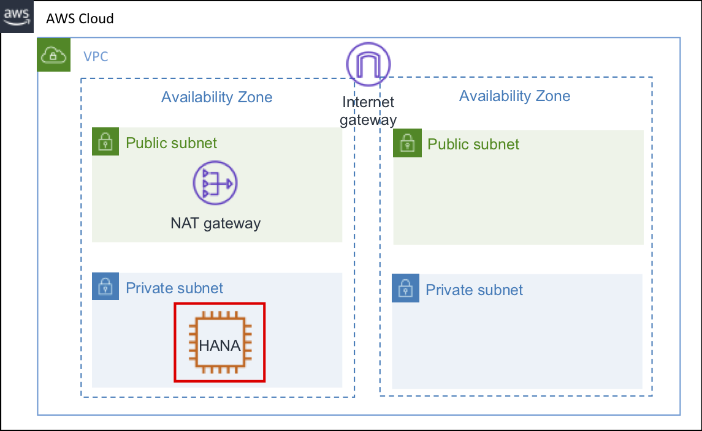
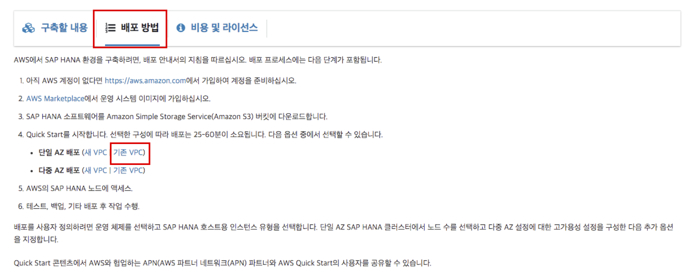
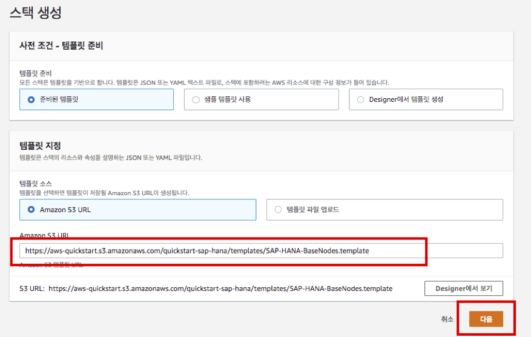
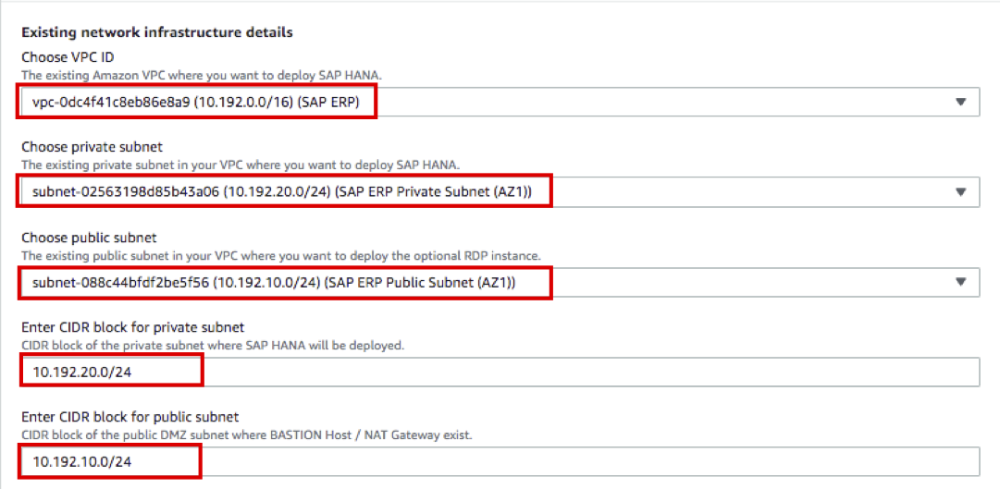
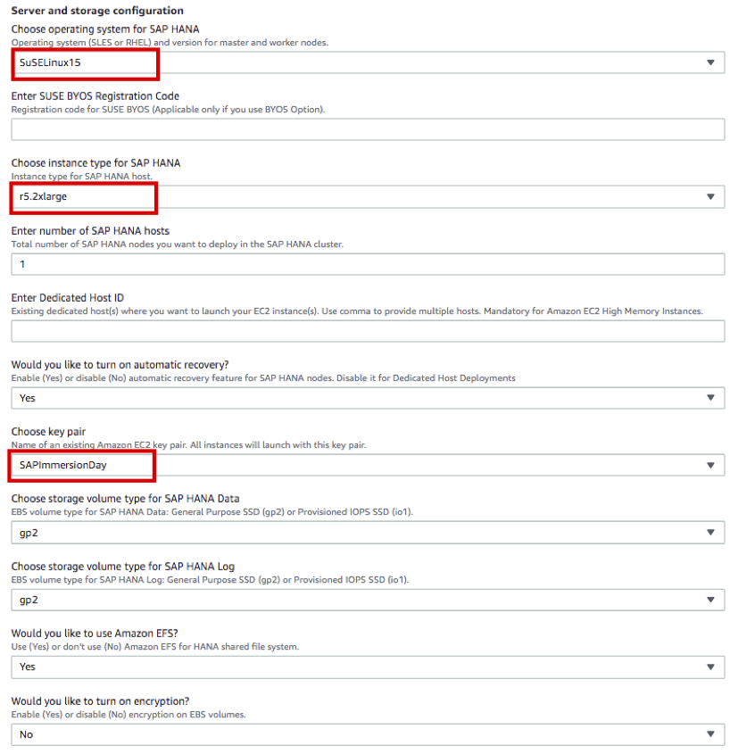
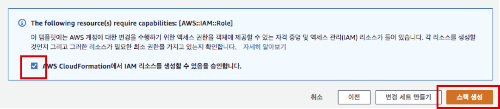
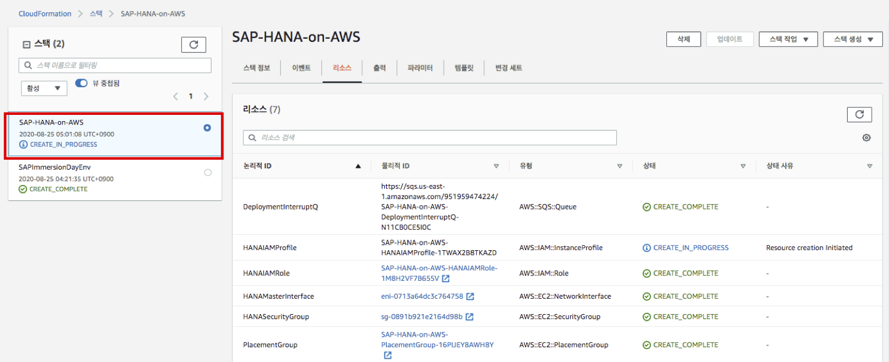

실습1. SAP HANA Quick Starts(옵션 2)
Lab 설명
이번 Lab은 SAP HANA Quick Starts 을 이용하여 SAP HANA DB 를 실습 0에서 생성된 인프라 위에 설치 합니다. 이번 실습은 단일 AZ Single Node 로 구성 합니다. 필요에 따라 단일 AZ(Single/Multi Node), Multi AZ High Availability로 구성이 가능합니다.
실습1. Launch Wizard for SAP HANA(옵션 1), 실습1. SAP HANA Quick Starts(옵션 2) 두 개중 하나만 수행하시기 바랍니다.
실습1. Launch Wizard for SAP HANA(옵션 1), 실습1. SAP HANA Quick Starts(옵션 2) 두 개중 하나만 수행하시기 바랍니다.
Lab Architecture

Deployment Steps
자세한 내용은 배포 안내서 를 참고 하시기 바랍니다. 배포방법은 6단계로 가이드 하고 있습니다. 본 실습은, 단계 4 내용을 다룹니다.
- 단계 1 : AWS 계정 준비
- 단계 2 : 운영 체제 이미지 구독
- 단계 3 : SAP HANA 소프트웨어 다운로드
- 단계 4 : 퀵 스타트 시작
- 단계 5 : SAP HANA 노드에 액세스
- 단계 6 : 배포 후 작업 수행
SAP HANA Quick Starts
SAP HANA Quick Start 을 통해 간단한 설정 및 클릭 만으로 SAP HANA DB를 설치할 수 있습니다
-
AWS Management Console에 로그인 합니다. (Region : us-east-1)
-
SAP HANA Quick Starts 에 접속합니다
-
페이지 하단 배포 방법 을 선택 하고 단일 AZ 배포 - 기존 VPC 를 선택합니다. 
-
CloudFormation 화면으로 리다이렉트 됩니다.
-
1단계 - 템플릿 지정 입니다.아래 S3 주소를 확인하시고 맞다면 다음 버튼을 누릅니다. 
-
2단계 - 스택 세부 정보 지정 지정 입니다. 스택이름은 디폴트 설정을 사용합니다.
-
Existing network infrastructure details 입니다. 나머지는 실습0에서 CloudFormation을 통해 만든 인프라를 사용합니다.
- Choose VPC ID : SAP ERP 선택
- Choose private subnet : SAP ERP Private Subnet (AZ1) 선택
- Choose public subnet : SAP ERP Public Subnet (AZ1) 선택
- Enter CIDR block for private subnet : 10.192.20.0/24 변경
- Enter CIDR block for public subnet : 10.192.10.0/24 변경 
-
Server and storage configuration 입니다. 나머지는 디폴트 설정을 사용하고 아래 옵션만 변경 합니다.
- Choose operating system and version for SAP HANA : SuSELinux15
- 다중 AZ(HA) 배포 시나리오에서는 SLES for SAP 또는 RHEL for SAP with HA and US가 필요합니다.
- Choose instance type for SAP HANA : r5.2xlarge (최소 인스턴스 선택)
- Choose key pair : SAPImmersionDay (이번 실습에는 Systems Manager를 통해 DB OS에 접속할 예정입니다) 
- Choose operating system and version for SAP HANA : SuSELinux15
-
SAP HANA database configuration 입니다. 나머지는 디폴트 설정을 사용하고 아래 옵션만 변경 합니다.
- Enter SAP HANA password(HANA Master Password 설정) : Init12345!
- Enter Amazon S3 URL for SAP HANA software(단계 3참고) : (SAP HANA 설치파일을 업로드한 버킷 Name 입력)
- ( e.g s3://sap-immsersionday-hol1/hanadb/ )
-
Optional configuration 입니다. 기본 설정을 유지합니다.
-
Advanced configuration (Do not modify unless directed by AWS Support) 입니다. 기본 설정을 유지합니다.
-
AWS Quick Start configuration 입니다. 기본 설정을 유지합니다.
-
다음 버튼을 클릭합니다.
-
3단계 - 스택 옵션 구성 입니다. 기본 설정을 유지하고. 다음 버튼을 누릅니다.
-
4단계 - 검토 입니다. 화면 아래 체크 박스를 선택하고 스택생성 버튼을 누릅니다. 
-
SAP-HANA-on-AWS 스택이 생성되었습니다. 최종 완료까지 30 ~ 40분정도 소요됩니다. 
-
CREATE_COMPLETE 상태가 되어야 실습이 완료된것 입니다.

-
실습1이 완료 되었습니다. 다음은 실습2 AWS BACKINT AGENT FOR SAP HANA를 진행하시기 바랍니다